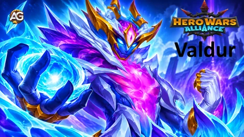
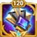

Guide de Valdur : Compétences, Skins et Équipes Hero Wars Alliance
- Par : Alexandre Domingos. .
Et si déplacer un ennemi comptait autant que le frapper ? Valdur, la Voix d’Elarite, transforme les déplacements sur le champ de bataille en occasions pour ses alliés. À mon avis, son véritable intérêt réside dans sa capacité à unir une équipe Elarite, plutôt que de compter uniquement sur les petits coups de son invocation.
Dans ce guide, j’explique comment le nombre d’Elarites en vie change un combat, pourquoi l’Attaque physique mérite votre attention et où je dépenserais mes ressources en premier. Si vous développez Metida, Orm, Alecto et Pallant, Valdur donne à cet investissement une stratégie d’équipe claire.

Commencez par distinguer les dégâts directs de l’apport à l’équipe : Enfant d’Elarite repousse et attire les ennemis, tandis que Résonance d’Elarite récompense une formation comptant davantage d’Elarites en vie. Perdre un allié peut donc changer bien plus que les dégâts que vous infligez.
Les priorités ci-dessous correspondent à mon évaluation de ses mécaniques décrites. Les notes servent de conseils de développement et ne constituent pas un classement fondé sur des taux de victoire mesurés.

📋 Sommaire de Valdur
Qui est Valdur dans Hero Wars Alliance ?
Valdur est la Voix d’Elarite, un Invocateur de la ligne arrière qui interrompt les compétences ennemies et modifie régulièrement la position des adversaires. Il complète la formation Elarite de cinq membres avec Metida, Orm, Alecto et Pallant.

- Rôle : Invocateur
- Élément : Elarite
- Position : Ligne arrière
- Attribut principal : Attaque physique
Statistiques indiquées de Valdur
- Santé : 14,936,503
- Attaque physique : 528,271
- Défense supplémentaire contre les Titans de Lumière et de Ténèbres : 120,600
- Dégâts supplémentaires contre les Titans de Lumière et de Ténèbres : 213,000
Il s’agit des valeurs de développement fournies, utilisées comme référence pour les exemples de compétences ci-dessous.
Avantages et inconvénients de Valdur - Hero Wars Alliance
✅ Avantages
- Repousse et attire les ennemis avec une seule invocation.
- Interrompt les enchaînements de compétences ennemies.
- L’Attaque physique renforce plusieurs bonus d’équipe.
- Permet les dégâts de mouvement dans une équipe Elarite complète.
- Son invocation ne peut pas être attaquée.
❌ Inconvénients
- Dépend fortement des alliés Elarite en vie.
- Les dégâts de mouvement nécessitent de véritables changements de position.
- Chaque coup de l’invocation ne dépend que de 10% de l’Attaque physique.
- L’invocation ne reste que quatre secondes.
- Les bonus de la Couronne ne s’appliquent qu’aux ennemis de Lumière et de Ténèbres.
Guide des compétences de Valdur - Hero Wars Alliance
Découvrez comment l’invocation de Valdur déplace les ennemis, comment Résonance d’Elarite compte les alliés en vie et pourquoi l’Attaque physique renforce ses dégâts et les bonus d’équipe.
Enfant d’Elarite
Description dans le jeu : Invoque Enfant d’Elarite au centre de l’équipe ennemie. Il ne peut pas se déplacer. À son apparition, il repousse les ennemis et leur inflige des dégâts. Après 4,0 secondes, Enfant d’Elarite disparaît, attire les ennemis vers lui et leur inflige des dégâts. Enfant d’Elarite est un Titan Elarite et ne peut pas être attaqué.

Explication de la compétence : Imaginez l’invocation comme une ancre temporaire dans la formation ennemie. Elle apparaît au centre, éloigne les ennemis et inflige des dégâts. Quatre secondes plus tard, elle disparaît, ramène les ennemis vers sa position et inflige à nouveau des dégâts. Elle ne peut ni se déplacer ni être attaquée.
Formule par coup : (10% × Attaque physique). Avec la valeur indiquée de 528,271 d’Attaque physique, les dégâts affichés sont de 52,827 à l’apparition et de 52,827 à la disparition.
Importance en PvP : Le déplacement peut perturber l’exécution des compétences ennemies et crée des occasions pour l’effet de mouvement à cinq Elarites. L’invocation elle-même est un Titan Elarite, ce qui compte dans le nombre d’Elarites en vie tant qu’elle est présente.
Résonance d’Elarite
Description dans le jeu : Passive. Renforce les Titans Elarite alliés. Les bonus se cumulent et dépendent du nombre de Titans Elarite en vie. Avec 2, accorde des dégâts supplémentaires contre les Titans d’Eau, de Terre et de Feu. Avec 3, accorde une défense supplémentaire contre les Titans d’Eau, de Terre et de Feu. Avec 4, Valdur reçoit 400 d’Énergie lorsqu’il utilise ses compétences. Avec 5, lorsqu’un Titan Elarite allié inflige des dégâts à un ennemi, la cible subit un effet pendant 4 secondes et reçoit des dégâts toutes les 0,5 seconde si elle a changé de position durant cet intervalle. Avec 6, réduit les dégâts subis de 50%.

Explication de la compétence : Comptez les Titans Elarite alliés en vie. Chaque seuil ajoute un bonus tout en conservant les précédents. Un allié vaincu peut réduire ce nombre : garder la formation en vie fait donc partie du plan offensif de Valdur.
- 2 Elarites en vie : Dégâts supplémentaires contre les Titans d’Eau, de Terre et de Feu. Formule : (25% × Attaque physique), affichés à 132,068 avec les statistiques indiquées.
- 3 Elarites en vie : Défense supplémentaire contre les Titans d’Eau, de Terre et de Feu. Formule : (25% × Attaque physique), affichés à 132,068.
- 4 Elarites en vie : Valdur reçoit 400 d’Énergie lorsqu’il utilise ses compétences.
- 5 Elarites en vie : Les dégâts d’un Elarite allié appliquent un effet de 4 secondes à l’ennemi. Toutes les 0,5 seconde, le jeu vérifie si cette cible a changé de position durant l’intervalle. Seul un intervalle remplissant cette condition inflige des dégâts de mouvement.
- 6 Elarites en vie : Les dégâts subis sont réduits de 50%.
Dégâts de mouvement par intervalle remplissant la condition : (0,5% × Attaque physique), affichés à 2,641 avec les statistiques indiquées. La formule dépend de l’Attaque physique ; les données fournies ne précisent pas le type de dégâts.
Comment atteindre six ? Les cinq membres Elarite de l’équipe plus Enfant d’Elarite en vie peuvent porter le total à six pendant les quatre secondes de durée de l’invocation. Cela nécessite que les cinq membres de l’équipe restent en vie ; il ne s’agit pas d’une réduction permanente des dégâts.
Importance en PvP : Pallant, Metida et Valdur déplacent les ennemis, favorisant ainsi l’effet à cinq membres. Une cible immobile ne subit pas les dégâts de cet effet simplement parce que l’affaiblissement est actif.
Meilleur skin pour le Titan Valdur - Hero Wars Alliance
Choisissez l’ordre des skins de Valdur en équilibrant la progression liée à l’Attaque physique et la Santé, afin que votre soutien Elarite survive assez longtemps pour maintenir ses bonus actifs.

Skin par défaut
Attaque physique : +196,800
Priorité d’amélioration pour le PvP : Très élevée — 1re — Améliore les deux coups de l’invocation, les bonus de dégâts et de défense ainsi que les dégâts de mouvement.
Priorité d’amélioration pour le Donjon : Très élevée — 1re — Renforce les mêmes effets proportionnels lorsque votre formation disponible peut les activer.

Skin primordial+
Santé : +5,255,950
Priorité d’amélioration pour le PvP : Élevée — 2e — Augmente la survie sans améliorer directement ses formules d’Attaque physique. Faites passer ce skin en priorité si Valdur meurt avant d’utiliser son invocation.
Priorité d’amélioration pour le Donjon : Élevée — 2e — Un investissement dans la survie lorsque l’usure l’empêche de maintenir le nombre d’Elarites de l’équipe. Donnez-lui la priorité si la survie est votre principal obstacle.
Le total indiqué correspond au Skin primordial+ ; ne l’ajoutez pas une seconde fois comme un bonus distinct du skin de base.
Priorité d’amélioration des artefacts de Valdur - Hero Wars Alliance
Comparez les artefacts de Valdur selon leurs bonus d’équipe, leur progression personnelle et leurs limites selon les adversaires, puis investissez dans les attributs qui aident le plus souvent votre formation Elarite.
Mon ordre général est Sceau, Arme, puis Couronne. La présentation ci-dessous conserve Arme, Couronne et Sceau dans leur ordre d’origine ; chaque indication de priorité montre l’ordre d’investissement.

Appel de Zorval (Artefact d’arme)
Attaque physique : +120,000
Appel de Zorval accorde à l’équipe un bonus d’Attaque physique avec une probabilité d’activation indiquée de 100%. Cela complète la progression de Valdur liée à l’Attaque physique. Les valeurs fournies ne précisent pas la durée du bonus.
Priorité d’amélioration pour le PvP : Élevée — 2e — Le soutien à l’attaque de l’équipe est précieux dès que Valdur survit de façon suffisamment fiable pour utiliser ses compétences.
Priorité d’amélioration pour le Donjon : Élevée — 2e — Aide l’offensive de l’équipe, tandis que le Sceau apporte d’abord une survie personnelle et une progression permanentes.

Couronne d’Elarite (Artefact de couronne)
Dégâts supplémentaires contre les Titans de Lumière et de Ténèbres : +213,000
Défense supplémentaire contre les Titans de Lumière et de Ténèbres : +120,600
Ces attributs supplémentaires de dégâts et de défense s’appliquent contre les Titans de Lumière et de Ténèbres. Ils n’offrent pas la même protection contre les adversaires d’Eau, de Terre, de Feu ou d’Elarite.
Priorité d’amélioration pour le PvP : Moyenne — 3e — Augmentez sa priorité si vous affrontez souvent Lumière et Ténèbres ; sa valeur dépend de l’élément ennemi.
Priorité d’amélioration pour le Donjon : Moyenne — 3e — La défense supplémentaire peut aider à survivre contre les ennemis de Lumière et de Ténèbres, mais vérifiez les adversaires de la salle avant d’investir. La nécessité de survivre dans le Donjon ne rend pas, à elle seule, cette Couronne universelle.

Sceau d’invocation chthonien (Artefact de sceau)
Attaque physique : +97,500
Santé : +3,975,000
Priorité d’amélioration pour le PvP : Très élevée — 1re — Associe une progression permanente liée à l’Attaque physique à de la Santé, soutenant ses compétences et sa survie dans tous les affrontements.
Priorité d’amélioration pour le Donjon : Très élevée — 1re — La Santé l’aide à rester en vie, tandis que l’Attaque physique améliore son invocation et les bonus de Résonance applicables.
Il s’agit des valeurs du Sceau d’invocation chthonien, et non de celles d’un Sceau d’invocation standard.
Comment contrer le Titan Valdur dans Hero Wars Alliance
La contre-stratégie la plus évidente vise sa dépendance aux alliés en vie et aux déplacements ennemis. Il s’agit de stratégies déduites de ses compétences, plutôt que d’une liste testée de Titans précis capables de le contrer.
- Réduisez le nombre d’Elarites : Vaincre un membre d’une formation de cinq Elarites fait descendre son nombre naturel sous le seuil des dégâts de mouvement. L’invocation peut temporairement augmenter à nouveau ce nombre ; surveillez donc le moment où elle apparaît.
- Limitez les déplacements lorsque c’est possible : L’effet à cinq Elarites exige un changement de position durant chaque intervalle vérifié. Le simple fait d’être marqué ne suffit pas.
- Mettez la pression en dehors de la durée de l’invocation : Avec cinq membres Elarite en vie dans l’équipe, le bonus défensif du seuil de six dépend de la présence d’Enfant d’Elarite.
- Interprétez correctement les bonus élémentaires : Les ennemis de Lumière et de Ténèbres font face aux bonus de la Couronne ; les ennemis d’Eau, de Terre et de Feu font face aux bonus de Résonance des seuils de deux et trois. Aucun affrontement élémentaire ne garantit automatiquement un contre efficace.
Je comparerais les combats avec et sans la première perte Elarite avant de juger une équipe destinée à le contrer. La position de Valdur à l’arrière signifie aussi que l’atteindre dépend des outils réels de sélection des cibles de l’équipe attaquante.
Meilleure équipe pour le Titan Valdur - Hero Wars Alliance
Stratégie de composition de l’équipe
Valdur, Metida, Orm, Alecto et Pallant fournissent cinq membres Elarite à l’équipe. Pallant, Metida et Valdur déplacent les ennemis, permettant les dégâts de mouvement de Résonance après qu’un Elarite allié a infligé des dégâts à une cible. Orm et Alecto complètent le total de cinq membres.
Avec les cinq en vie, Enfant d’Elarite peut temporairement fournir la sixième unité du décompte et la réduction des dégâts subis. Ma priorité est de garder la formation complète en vie assez longtemps pour que ces périodes de contrôle et de défense fassent la différence.
Faiblesses et points à considérer pour l’équipe
Faible contre : Les stratégies qui éliminent rapidement un allié Elarite ou empêchent des déplacements réguliers peuvent compromettre la principale synergie de la formation. Cela décrit une faiblesse des mécaniques, et non un affrontement perdant vérifié.
Considérations stratégiques : Les bonus dépendent des Titans en vie, et l’effet de mouvement vérifie les changements de position toutes les demi-secondes. Ne supposez pas que chaque marque inflige des dégâts à chaque intervalle. Testez votre niveau de développement réel avant d’augmenter l’investissement.
⭐ Valdur : Verdict final d’Alexandre
Je recommande de développer Valdur lorsque vous vous engagez dans la formation Elarite complète. Les dégâts directs de son invocation ne représentent qu’une partie de sa valeur : les déplacements, les bonus cumulables et le décompte temporaire du sixième Elarite donnent à l’équipe un plan de bataille cohérent.
Je commencerais par le Skin par défaut et le Sceau d’invocation chthonien, puis je développerais Appel de Zorval. Faites passer le Skin primordial+ en priorité s’il meurt trop tôt et augmentez la priorité de la Couronne d’Elarite lorsque les affrontements contre Lumière et Ténèbres le justifient. Investissez dans le problème que votre équipe rencontre réellement, tout en gardant à l’esprit la synergie des cinq membres.
Explorez de nouvelles compétences avec nos guides à la une !


Donnez votre avis !
Avez-vous aimé notre guide du Titan Valdur ? Y a-t-il quelque chose que vous n’avez pas compris ou pour lequel vous aimeriez proposer des modifications ? Nous vous invitons à participer à notre section de commentaires sur la page du Blog Alexandre Games. N’hésitez pas à exprimer votre opinion, à poser vos questions et à partager vos suggestions.
Cliquez sur le bouton ci-dessous pour commencer :